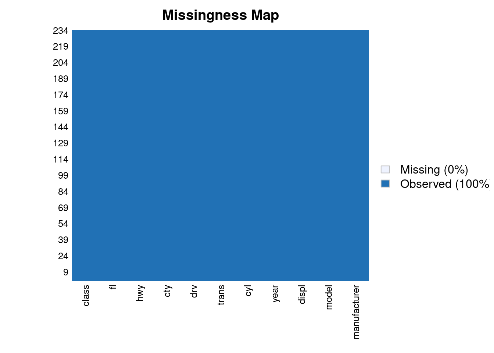
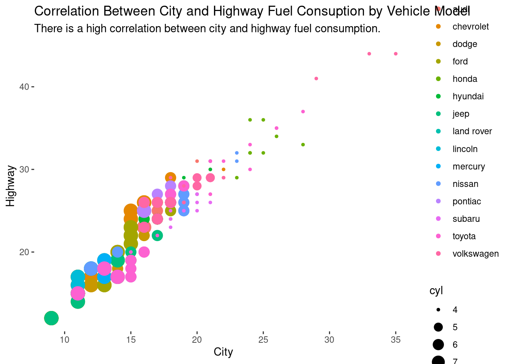
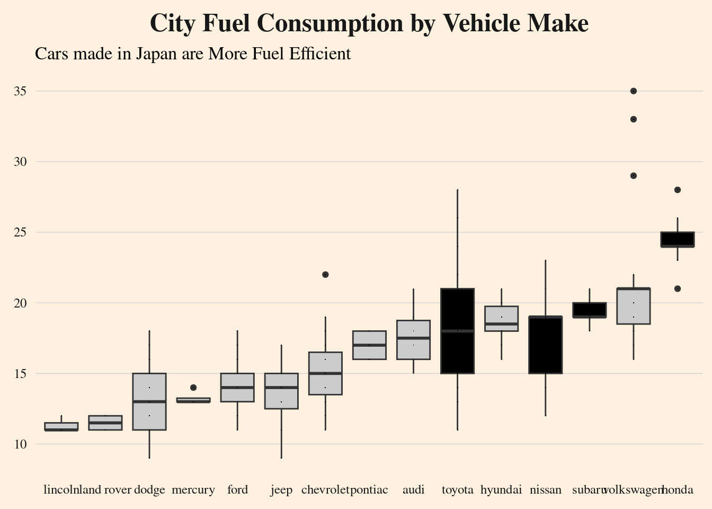

if (!require(pacman)) {
install.packages("pacman")
library(pacman)
}Loading required package: pacmanpacman::p_load(tidyverse, Amelia)John Karuitha
January 27, 2023
This post is a visualization of motor vehicle fuel consumption using R and ggplot2. The analysis shows that Japanese vehicles have significantly lower fuel consumption. Is this the reason Japanese cars rule the roads all over the world?
I start by loading the packages required for the analysis.
Loading required package: pacmanNext, I lad and examine the data for missing values.
Rows: 234
Columns: 11
$ manufacturer <chr> "audi", "audi", "audi", "audi", "audi", "audi", "audi", "…
$ model <chr> "a4", "a4", "a4", "a4", "a4", "a4", "a4", "a4 quattro", "…
$ displ <dbl> 1.8, 1.8, 2.0, 2.0, 2.8, 2.8, 3.1, 1.8, 1.8, 2.0, 2.0, 2.…
$ year <int> 1999, 1999, 2008, 2008, 1999, 1999, 2008, 1999, 1999, 200…
$ cyl <int> 4, 4, 4, 4, 6, 6, 6, 4, 4, 4, 4, 6, 6, 6, 6, 6, 6, 8, 8, …
$ trans <chr> "auto(l5)", "manual(m5)", "manual(m6)", "auto(av)", "auto…
$ drv <chr> "f", "f", "f", "f", "f", "f", "f", "4", "4", "4", "4", "4…
$ cty <int> 18, 21, 20, 21, 16, 18, 18, 18, 16, 20, 19, 15, 17, 17, 1…
$ hwy <int> 29, 29, 31, 30, 26, 26, 27, 26, 25, 28, 27, 25, 25, 25, 2…
$ fl <chr> "p", "p", "p", "p", "p", "p", "p", "p", "p", "p", "p", "p…
$ class <chr> "compact", "compact", "compact", "compact", "compact", "c…Warning: Unknown or uninitialised column: `arguments`.
Unknown or uninitialised column: `arguments`.Warning: Unknown or uninitialised column: `imputations`.
In this section, I check the correlation between highway fuel consumption vs city fuel consumption. It turns out that there is a high correlation. Thus, there is no trade-off. No vehicle that consumes more in the highway will consume less in the city.
## There is high correlation between highway and city fuel consumption. Again, vehicles with more cylinders generally consume more fuel per mile/ kilometer.
mpg %>% ggplot(mapping = aes(
x = cty, y = hwy,
size = cyl, color = manufacturer
)) +
geom_point() +
theme_classic() +
theme(axis.line = element_blank()) +
labs(x = "City", y = "Highway",
title = "Correlation Between City and Highway Fuel Consuption by Vehicle Model",
subtitle = "There is a high correlation between city and highway fuel consumption.")
Finally, I visualize the fuel economy of the cars by manufacturer. It is clear from the visual that cars made in Japan are more fuel efficient.
## Japanese cars are very fuel efficient.
mpg %>%
ggplot(mapping = aes(
x = fct_reorder(manufacturer, cty, median),
y = cty
)) +
geom_boxplot(aes(fill = manufacturer %in% c("toyota", "nissan", "subaru", "honda")),
show.legend = FALSE
) +
geom_point(shape = ".") +
artyfarty::theme_ft() +
theme(axis.line = element_blank()
) +
labs(
x = NULL, y = NULL,
title = "City Fuel Consumption by Vehicle Make",
subtitle = "Cars made in Japan are More Fuel Efficient"
) +
scale_fill_manual(values = c("gray 80", "black")) 